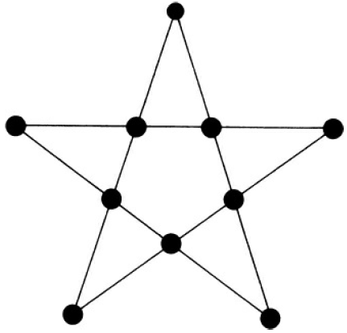

| PCC | Mahmud | Statistics | statmania.info |
Make numbers using four fours
Arrange 10 soldiers in 5 rows with 4 in each row.

Chapter name: Multiplication of Algebraic Expressions
\(+ve \rightarrow friend\)
\(-ve \rightarrow foe\)
Multiply
Divide the first expression by the second one
Questions
Answers
Notation varies by countries
Questions
Answers
\(A=x^2-xy+y^2\)
\(B = x^2+xy+y^2\)
\(C = x^4+x^2y^2+y^4\)
Answers
= \((x^2+y^2)^2-(xy)^2 = x^4+x^2y^2+y^4\)
\((a+b)^2 = a^2+2ab+b^2\)
\[\begin{eqnarray} (a+b)^2 &=& a^2+2ab+b^2 \nonumber \\ &=& a^2-2ab+b^2 + 2ab + 2ab \nonumber \\ &=& (a-b)^2 +4ab \nonumber \\ \end{eqnarray}\]
Questions
Answers
Questions
Answers
Questions
Answers
Questions
Answers
Multiples
\(12 \to 12, 24, 36, 48, 60, 72, 84, 96\)
\(16 \to 16, 32, 48, 64, 80, 96\)
Factors
\(12 \to 2, 3, 4, 6, 12\)
\(16 \to 2, 4, 8, 16\)
Distribute 35 camels among 3 brothers so the eldest brother gets half, second brother gets one-third, and the youngest brother gets one-ninth.